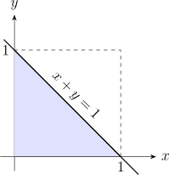
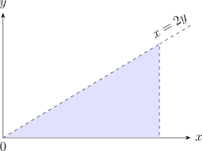

3.2 Joint Distributions
Definition 3.2.1. Let \(X\) and \(Y\) be discrete random variables, a formula or table listing all the possible values of \(X\) and \(Y\) together with the associated probabilities is called a joint probability distribution of \(X\) and \(Y\) denoted by \(f_{X,Y}(x,y)\) and is given \[f_{X,Y}(x,y)=P(X=x, Y=y)\] and \[\sum _x\sum _yf_{X,Y}(x,y)=\sum _x\sum _yP(X=x, Y=y).\]
Example 3.2.2. Two refills for a ball point pen are selected at random from a box that contains 3 blue refills, 2 red refills and 3 green refills. Let \(X\) be the number of blue refills and \(Y\) be the number of red refills selected. Find the joint distribution of \(X\) and \(Y\).
Solution. Possible values of \(X\) are: \(0,\, 1,\, 2\) and \(Y\) are \(0,\, 1,\, 2.\)
| \(Y\) | |||
| \(X\) | 0 | 1 | 2 |
| 0 | \(\frac {3}{28}\) | \(\frac {6}{28}\) | \(\frac {1}{28}\) |
| 1 | \(\frac {9}{28}\) | \(\frac {6}{28}\) | 0 |
| 2 | \(\frac {3}{28}\) | 0 | 0 |
\[P(X=0, Y=0) =\frac {\binom {3}{0}\,\binom {2}{0}\,\binom {3}{2}}{\binom {8}{2}}=\frac {3}{28}\] \[P(X=0, Y=1) =\frac {\binom {3}{0}\,\binom {2}{1}\, \binom {3}{1}}{\binom {8}{2}}=\frac {2\times 3}{28}=\frac {6}{28}\] Therefore, the general formula is: \[f_{X,Y}(x,y) =P(X=x, Y=y)=\frac {\binom {3}{x}\,\binom {2}{y}\binom {3}{2-x-y}}{\binom {8}{2}}.\] □
Definition 3.2.3. Let \(X\) and \(Y\) be continuous random variables with joint range \(B\) in the Euclidean space, then \(f_{X,Y}(x,y)\) the joint probability function has the following properties:
- \(f_{X,Y}(x,y)\geq 0\,\) for \(\,x,\, y\in B\)
- \(\displaystyle {\iint \limits _Bf_{X,Y}(x,y)\,dx\, dy=\iint \limits _Bf_{X,Y}(x,y)\,dy\,dx=1}\)
Remark 3.2.4. The joint p.d.f for two continuous random variables lying in a specified region \[P(a<X<b, c<Y<d)=\int ^b_a\int ^d_cf_{X,Y}(x,y)\, dy\, dx=\int ^d_c\int ^b_af_{X,Y}(x,y)dx\,dy\]
Example 3.2.5. Suppose that the variation in two continuous random variables, \(X\) and \(Y\), can be modeled by the joint p.d.f \(f_{X,Y}(x,y) = cxy\), for \(0 < y < x < 1\). Find \(c\).
Solution. By inspection, (a) in the definition 3.1.3, \(f_{X,Y}(x,y)\) will be nonnegative as long as \(c\geq 0\). \[\iint _{B}cxy\, dy\, dx = 1\quad \implies \quad \int ^1_0\int ^x_0cxy\, dy \, dx = 1\] \[c\int ^1_0\left [\frac {y^2}{2}\right ]^x_0\, dx = 1\] \[c\int ^1_0\frac {x^3}{2}\, dx = 1\] \[c\left [\frac {x^4}{8}\right ]^1_0 = 1\] \[\frac {c}{8} = 1.\] Therefore, \(c = 8\). □
Example 3.2.6. Let \(X\) and \(Y\) be random variables with a joint p.d.f \[f_{X,Y}(x,y)=x+y\, ,\quad x\in (0,1),\quad y\in (0,1).\] Find:
-
Show that \(f_{X,Y}(x,y)\) is indeed a joint p.d.f.
Solution. We show that \(\iint _B f_{X,Y}(x,y) = 1.\) \begin {align*} \int ^1_0\int ^1_0(x+y)\, dx\, dy & = \int ^1_0\left [\frac {x^2}{2}+xy\right ]^1_0\, dy\\ & = \int ^1_0\left (\frac {1}{2}+y\right )dy\\ & = \left [\frac {1}{2}y+\frac {y^2}{2}\right ]^1_0\\ & = 1. \end {align*} □
-
Find \(P(x+y<1)\).
Solution. The region of integration is the area below the line \(x + y = 1\).

Figure 3.1: The region of integration for \(P(X+Y<1)\): the triangle below the line \(x+y=1\) in the first quadrant. \begin {align*} P(X+Y <1) & = \int ^1_0\int ^{1-y}_0(x+y)\, dx\, dy = \int ^1_0\left [\frac {x^2}{2}+xy\right ]^{1-y}_0dy\\ & = \int ^1_0\left (\frac {1-2y+y^2}{2}+y-y^2\right )\, dy\\ & = \frac {1}{2}\int ^1_0(1-y^2)dy\\ & = \frac {1}{3}. \end {align*}
Therefore, \(P(X + Y < 1) = \frac {1}{3}.\) □
- (Exercise) Find \(P\left (X+Y>1\frac {1}{2}\right )\)
Exercise 3.2.7. A study claims that the daily number of hours, \(X\), a teenager watches television and the daily number of hours, \(Y\), he works on his homework are approximated by the joint p.d.f \[f_{X,Y}(x,y) = xye^{-(x+y)}\, , \quad x > 0, \quad y > 0.\] What is the probability that a teenager chosen at random spends at least twice as much time watching television as he does working on this homework?
Solution. The region, \(B\), in the \(xy-\)plane corresponding to the event “\(X \geq 2Y\)”.

\[P(2Y \leq X) = \int _0^{\infty }\int _0^{\frac {x}{2}} xye^{-(x + y)}\, , \, dy\, dx\] We can write \begin {align*} P(X \leq 2Y) & = \int ^{\infty }_0 xe^{-x}\left [\int ^{x/2}_0 y e^{-y}\, dy\right ]\, dx\\ & = \int ^{\infty }_0xe^{-x}\left [1- \left (\frac {x}{2} + 1\right )e^{-x/2}\right ]\, dx\\ & = \int ^{\infty }_0 xe^{-x}\, dx - \frac {1}{2}\int _0^{\infty }e^{-3x/2}\, dx - \int ^{\infty }_0xe^{-3x/2}\, dx\\ & = 1 - \frac {16}{54}-\frac {4}{9}\\ & = \frac {7}{27}. \end {align*} □
Definition 3.2.8. If \(X\) and \(Y\) are discrete random variables with a joint distribution function \(f_{X,Y}(x,y)\) then \(f_X(x)\) and \(f_Y(y)\) are called marginal distribution of \(X\) and \(Y\) respectively and are given by \[f_X(x) = \sum _{\text {all}\, y} f_{X,Y}(x,y)\] and \[f_Y(y) = \sum _{\text {all}\, x}f_{X,Y}(x,y).\]
Example 3.2.9. Using example 3.2.2 \[P(X=x,Y=y) =\frac {\binom {3}{x}\binom {2}{y}\binom {3}{2-x-y}}{\binom {8}{2}}.\]
Solution. We can get the marginals from the table
| \(X\) | 0 | 1 | 2 | \(P(X=x)\) |
| 0 | \(\frac {3}{28}\) | \(\frac {6}{28}\) | \(\frac {1}{28}\) | \(\frac {16}{28}=P(X=0)\) |
| 1 | \(\frac {9}{28}\) | \(\frac {6}{28}\) | 0 | \(\frac {15}{28}=P(X=1)\) |
| 2 | \(\frac {3}{28}\) | 0 | 0 | \(\frac {3}{28}=P(X=2)\) |
| \(P(Y=y)\) | \(\frac {15}{28}\) | \(\frac {12}{28}\) | \(\frac {1}{28}\) | |
The marginal of \(X\). i.e. \(f_X(x) =P(X=x)\)
| X | 0 | 1 | 2 | |
| \(f_X(x)\) | \(\frac {10}{28}\) | \(\frac {15}{28}\) | \(\frac {3}{28}\) |
The marginal of \(Y\). i.e. \(f_Y(y)=P(Y=y)\)
| \(Y\) | 0 | 1 | 2 |
| \(f_Y(y)\) | \(\frac {15}{28}\) | \(\frac {12}{28}\) | \(\frac {1}{28}\) |
Using the formula \begin {align*} f_X(x) & =\sum ^2_{y=0}\frac {\binom {3}{x}\binom {2}{y}\binom {3}{2-x-y}}{\binom {8}{2}}\\ & =\frac {\binom {3}{x}}{\binom {8}{2}}\sum ^2_{y=0}\binom {2}{y}\binom {3}{2-x-y}\\ & = \frac {\binom {3}{x}\binom {5}{2-x}}{\binom {8}{2}}\, , \quad x=0, 1, 2. \end {align*} □
Exercise 3.2.10. A supermarket has two express lines. Let \(X\) and \(Y\) denote the number of customers in the first and in the second, respectively, at any given time. During nonrush hours, the joint p.d.f of \(X\) and \(Y\) is summarized by the following table:
| 0 | 1 | 2 | 3 | ||
| 0 | 0.1 | 0.2 | 0 | 0 | |
| \(Y\) | 1 | 0.2 | 0.25 | 0.05 | 0 |
| 2 | 0 | 0.05 | 0.05 | 0.025 | |
| 3 | 0 | 0 | 0.025 | 0.05 | |
Definition 3.2.11. Suppose \(X\) and \(Y\) are jointly continuous with joint p.d.f \(f_{X,Y}(x,y)\). Then the marginal p.d.fs, \(f_X(x)\) and \(f_Y(y)\), are given by \[f_X(x) = \int _{-\infty }^{\infty } f_{X,Y}(x,y)\, dy\] and \[f_Y(y) = \int ^{\infty }_{-\infty } f_{X,Y}(x,y)\, dx.\]
Example 3.2.12. Consider the joint p.d.f of \(X\) and \(Y\) given by \[f_{X,Y}(x,y) = \begin {cases} y^2\, e^{-y(x+1)}& x\geq 0, \quad y \geq 0\\ 0, & \text {elsewhere}\\ \end {cases}\] Find the marginals of \(X\) and \(Y\).
Solution. Marginal of \(X\) \[f_X(x) = \int _y f_{X,Y}(x,y)\,dy = \int ^{\infty }_0y^2\,e^{-y(x+1)}\ dy.\] Let \(m = y(x + 1)\) implies that \(\frac {dm}{x + 1} = dy\) \begin {align*} f_X(x) & = \int ^{\infty }_0\left (\frac {m}{x + 1}\right )^2\, e^{-m}\, \frac {dm}{x + 1}\\ & = \frac {1}{(x + 1)^2}\, \frac {1}{x + 1}\int ^{\infty }_0m^2\, e^{-m}\, dm\\ & = \frac {1}{(x + 1)^3}\, 2!\\ & = \frac {2}{(x + 1)^3}\,, \quad x\geq 0. \end {align*}
Marginal of \(Y\) \begin {align*} f_Y(y) & = \int _0^{\infty } y^2 e^{-y(x+1)}\, dx\\ & = y^2e^{-y}\int ^{\infty }_0e^{-yx}\, dx\\ & = y^2e^{-y}\left [-\frac {e^{-yx}}{y}\right ]^{\infty }_0\\ & = ye^{-y}\, , \quad y\geq 0. \end {align*} □
3.2.1 Joint Cumulative Distribution Function
Definition 3.2.13. The joint c.d.f of \(X\) and \(Y\) is given by \[F(x,y) = P(X \leq x, \, Y\leq y)\,, \quad (x,y)\in \mathbb { R}^2.\]
Properties of \(F\):
- \(F\) is non-decreasing in \(x\) for fixed \(y\)
- \(F\) is non-decreasing in \(y\) for fixed \(x\)
- \(\lim _{(x,y)\rightarrow (\infty ,\infty )} F(x,y) = 1\). \[\lim _{x\rightarrow -\infty }F(x,y) = \lim _{y\rightarrow -\infty } F(x,y) = \lim _{(x,y)\rightarrow (-\infty , -\infty )} F(x,y) =0.\]
Definition 3.2.14. The marginal c.d.f. of \(X\) is given by \[F_X(x) = P(X\leq x) = \lim _{y\rightarrow \infty }F(x,y), \quad \in \mathbb {R}.\] The marginal c.d.f. of \(Y\) is given by \[F_Y(y) = P(Y\leq y) = \lim _{x\rightarrow \infty } F(x,y), \quad \in \mathbb {R}.\]
Example 3.2.15. If \(X\) and \(Y\) are continuous random variable with joint p.d.f. \[f_{X,Y}(x,y) = x + y\, , \quad 0\leq x \leq 1, \quad 0 \leq y \leq 1.\] Find
-
the joint c.d.f of \(X\) and \(Y\).
Solution. The joint c.d.f \(F(x,y) = P(X\leq x, Y\leq y)\). \begin {align*} F(x,y) & = \int _{u= 0}^x\int _{v = 0}^y (u + v)\, dv \, du\\ & = \int ^x_{u = 0}\left [uy + \frac {y^2}{2}\right ]\, du\\ & = \frac {x^2y + xy^2}{2}\,, \quad 0 < x < 1\, , \quad 0 < y < 1. \end {align*}
Therefore \[F(x,y) = \begin {cases} 0, & 0\leq x, \quad 0\leq y\\ \frac {x^2y+xy^2}{2}, & 0< x < 1\, , \quad 0 < y < 1\\ \frac {y + y^2}{2}, & 0< y < 1, \quad x\geq 1\\ \frac {x + x^2}{2}, & 0 < x < 1, \quad y \geq 1\\ 1, & x\geq 1, \quad y \geq 1\\ \end {cases}\] □
-
the marginal c.d.f of \(X\) and the marginal c.d.f of \(Y\).
Solution. The marginal of \(X\) \[F_X(x) = \lim _{y\rightarrow \infty }F(x,y) = \lim _{y \rightarrow 1} \frac {x^2y+xy^2}{2} = \begin {cases} 0, & x \leq 0\\ \frac {x^2 + x}{2}, & 0 < x < 1\\ 1, & x\geq 1\\ \end {cases}.\]
The marginal of \(Y\) \[F_Y(y) = \lim _{x\rightarrow \infty } F(x,y) = \begin {cases} 0, & y \leq 0\\ \frac {y^2 + y}{2}, & 0 < y < 1\\ 1, & y \geq 1\\ \end {cases}.\] □
3.2.2 Expected Values
- Suppose \(X\) and \(Y\) are discrete random variables with joint p.d.f \(f_{X,Y}(x,y)\) and let \(g(X,Y)\) be a real-valued function of \(X\) and \(Y\). Then the expected value of the random variable \(g(X,Y)\) is given by \[E[g(X,Y)] = \sum _{\text {all}\, x}\sum _{\text {all}\, y} g(x,y)\, f_{X,Y}(x,y).\]
- Suppose \(X\) and \(Y\) are continuous random variables with joint p.d.f \(f_{X,Y}(x,y)\), and let \(g(X,Y)\) be a real-valued function. Then the expected value of the random variable \(g(X,Y)\) is given by \[E[g(X,Y)] = \int ^{\infty }_{-\infty }\int ^{\infty }_{-\infty }g(x,y)\, f_{X,Y}(x,y)\, dx\,dy.\]
Example 3.2.17. If \(X\) and \(Y\) are jointly distributed
| \(X\) | |||
| \(Y\) | 0 | 1 | 2 |
| 0 | \(\dfrac {3}{28}\) | \(\dfrac {9}{28}\) | \(\dfrac {3}{28}\) |
| 1 | \(\dfrac {6}{28}\) | \(\dfrac {6}{28}\) | 0 |
| 2 | \(\dfrac {1}{28}\) | 0 | 0 |
Find \(E[g(X,Y)]\) where
-
\(g(x,y)=xy\)
Solution. \begin {align*} E[g(X,Y)] & = E[XY]\\ & = \sum ^2_{x=0}\sum ^2_{y=0}xy\cdot P(X=x,Y=y)\\ & = (1)(1)\, P(X=1,Y=1)\\ & = \frac {6}{28}\\ & = \frac {3}{14}. \end {align*}
Every other term vanishes: those with \(x=0\) or \(y=0\) contribute nothing because \(xy=0\), and the only remaining cells, \((2,1)\), \((1,2)\) and \((2,2)\), all have probability zero. So a double sum over nine cells reduces to a single term. \begin {align*} \end {align*} □
-
\(g(x,y)=xy^2\)
Solution. \begin {align*} E(XY^2) & =\sum ^2_{x=0}\sum ^2_{y=0}xy^2\cdot P(X=x,Y=y)\\ & =\sum ^2_{x=1}\sum ^2_{y=1}xy^2\cdot P(X=x,Y=y)\\ & = (1)(1)^2\, P(X=1,Y=1)\\ & = \frac {6}{28}\\ & = \frac {3}{14}. \end {align*} □
-
\(g(x,y)=x\)
Solution. \begin {align*} E(X) & = \sum ^2_{x = 0}\sum ^2_{y = 0} x\, P(X = x, \, Y = y)\\ & = 1\cdot \big [P(X = 1, Y = 0) + P(X = 1, Y = 1)\big ] + 2\cdot P(X=2, Y=0)\\ & = 1\cdot \left (\frac {9}{28} + \frac {6}{28}\right )+2\cdot \frac {3}{28}\\ & = \frac {15}{28}+\frac {6}{28} \, = \, \frac {21}{28} \, = \, \frac {3}{4}. \end {align*} □
Example 3.2.18. Suppose \(X\) and \(Y\) have a joint distribution given by \[f_{X,Y}(x,y)=x^2+\frac {xy}{3}\, ,\quad 0<x<1,\quad 0<y<2\] Find \(E[g(x,y)]\)
-
\(g(x,y)=xy\)
Solution. \begin {align*} E[g(X,Y)]=E(XY) & = \int ^1_0\int ^2_0xy\left (x^2+\frac {xy}{3}\right )\,dydx\\ & = \int ^1_0\int ^2_0\left (x^3y+\frac {x^2y^2}{3}\right )\, dydx\\ & = \int ^1_0\left [2x^3+\frac {8x^2}{9}\right ]\,dx\\ & = \left [\frac {x^4}{2}+\frac {8x^3}{27}\right ]^1_0\\ & = \frac {1}{2}+\frac {8}{27}\\ & = \frac {43}{54}. \end {align*} □
-
\(g(x,y)=x^2y\).
Solution. \begin {align*} E(X^2Y) & = \int ^2_0\int ^1_0x^2y\left (x^2+\frac {xy}{3}\right )\,dx\, dy\\ & = \int ^2_0\left [\frac {x^5}{5}+\frac {x^4y^2}{12}\right ]^1_0dy\\ & = \int ^2_0\left [\frac {y}{5}+\frac {y^2}{12}\right ]\, dy\\ & = \left [\frac {y^2}{10}+\frac {y^3}{36}\right ]^2_0\\ & = \frac {2}{5}+\frac {2}{9}=\frac {18+10}{45}\\ & = \frac {28}{45}. \end {align*} □
3.2.3 Practice problems
Problem 3.2.1. [Tutorial Sheet 4] Suppose \(X\) and \(Y\) have joint probability function \[f(x,y) = \frac {x+y}{21},\qquad x = 1,2,3;\quad y = 1,2.\] Find (a) \(f_X(x)\) and \(f_Y(y)\); (b) \(\operatorname {Cov}(X,Y)\); (c) \(f(x\mid y)\); (d) \(f(y\mid x)\); (e) \(\operatorname {Var}(X\mid y)\).
Show solution
Solution. (a). Sum out the other variable: \[f_X(x) = \sum _{y=1}^{2}\frac {x+y}{21} = \frac {2x+3}{21},\qquad f_Y(y) = \sum _{x=1}^{3}\frac {x+y}{21} = \frac {6+3y}{21}.\] So \(f_X = \tfrac {5}{21},\tfrac {7}{21},\tfrac {9}{21}\) for \(x=1,2,3\), and \(f_Y = \tfrac {9}{21},\tfrac {12}{21}\) for \(y=1,2\). Each set sums to 1.
(b). \[E(X) = \frac {5+14+27}{21} = \frac {46}{21},\qquad E(Y) = \frac {9+24}{21} = \frac {11}{7},\] and summing \(xy\,f(x,y)\) over the six cells gives \(E(XY) = \tfrac {72}{21} = \tfrac {24}{7}\). Hence \[\operatorname {Cov}(X,Y) = \frac {24}{7}-\frac {46}{21}\cdot \frac {11}{7} = \frac {504-506}{147} = -\frac {2}{147}.\] The covariance is negative but very small. It is not zero, so \(X\) and \(Y\) are not independent – which is also clear from the fact that \(x+y\) does not factorise into a function of \(x\) times a function of \(y\).
(c), (d). Dividing the joint by each marginal, \[f(x\mid y) = \frac {x+y}{6+3y},\qquad f(y\mid x) = \frac {x+y}{2x+3}.\]
(e). From \(f(x\mid y)\), \[E(X\mid y) = \frac {\sum x(x+y)}{6+3y} = \frac {14+6y}{6+3y},\qquad E(X^{2}\mid y) = \frac {\sum x^{2}(x+y)}{6+3y} = \frac {36+14y}{6+3y}.\] So \(\operatorname {Var}(X\mid y) = E(X^{2}\mid y)-\left [E(X\mid y)\right ]^{2}\), giving \[\operatorname {Var}(X\mid Y=1) = \frac {50}{9}-\left (\frac {20}{9}\right )^{2} = \frac {50}{81}, \qquad \operatorname {Var}(X\mid Y=2) = \frac {16}{3}-\left (\frac {13}{6}\right )^{2} = \frac {23}{36}.\]
Problem 3.2.2. [Tutorial Sheet 4] The random variables \(X\) and \(Y\) have joint density function \[f(x,y) = 12xy(1-x),\qquad 0<x<1,\quad 0<y<1.\] Find (a) whether \(X\) and \(Y\) are independent; (b) \(E(X)\) and \(E(Y)\); (c) \(\operatorname {Var}(X)\) and \(\operatorname {Var}(Y)\); (d) \(\rho (X,Y)\).
Show solution
Solution. (a). The marginals are \[f_X(x) = \int _0^1 12xy(1-x)\,dy = 6x(1-x),\qquad f_Y(y) = \int _0^1 12xy(1-x)\,dx = 2y.\] Their product is \(12xy(1-x)\), which is exactly \(f(x,y)\), so \(X\) and \(Y\) are independent.
This could have been seen without integrating: the density factorises as \(\left [6x(1-x)\right ]\left [2y\right ]\) and the region \(0<x<1\), \(0<y<1\) is a rectangle. Both conditions are needed – a density that factorises over a triangular region is not independent, because the range of one variable would then depend on the other.
(b). \[E(X) = \int _0^1 6x^{2}(1-x)\,dx = 6\left (\tfrac 13-\tfrac 14\right ) = \frac {1}{2},\qquad E(Y) = \int _0^1 2y^{2}\,dy = \frac {2}{3}.\] \(E(X) = \tfrac 12\) is no surprise: \(6x(1-x)\) is symmetric about \(x=\tfrac 12\).
(c). \[E(X^{2}) = \int _0^1 6x^{3}(1-x)\,dx = \frac {3}{10} \implies \operatorname {Var}(X) = \frac {3}{10}-\frac {1}{4} = \frac {1}{20},\] \[E(Y^{2}) = \int _0^1 2y^{3}\,dy = \frac {1}{2} \implies \operatorname {Var}(Y) = \frac {1}{2}-\frac {4}{9} = \frac {1}{18}.\]
(d). Independent variables are uncorrelated, so \(\operatorname {Cov}(X,Y) = 0\) and hence \(\rho (X,Y) = 0\). (The converse does not hold: zero correlation does not imply independence.)
Problem 3.2.3. [Tutorial Sheet 4] Suppose \(X\) and \(Y\) have joint probability density function \[f(x,y) = k(x+y^{2}),\qquad 0<x<2,\quad 0<y<1.\] Find (a) \(k\); (b) \(P\left (X>1,\,Y<\tfrac 12\right )\); (c) \(f_X(x)\) and \(f_Y(y)\); (d) \(\operatorname {Cov}(X,Y)\); (e) \(\operatorname {Var}(X)\) and \(\operatorname {Var}(Y)\); (f) \(f(y\mid x)\); (g) \(P\left (Y>\tfrac 12 \mid X=1\right )\).
Show solution
Solution. (a). \[\int _0^1\!\!\int _0^2 k(x+y^{2})\,dx\,dy = k\int _0^1\left (2+2y^{2}\right )dy = k\left (2+\tfrac 23\right ) = \frac {8k}{3} = 1 \implies k = \frac {3}{8}.\]
(b). \[P\left (X>1,\,Y<\tfrac 12\right ) = \frac {3}{8}\int _0^{1/2}\!\!\int _1^2 (x+y^{2})\,dx\,dy = \frac {3}{8}\int _0^{1/2}\left (\tfrac 32+y^{2}\right )dy = \frac {19}{64}.\]
(c). \[f_X(x) = \frac {3}{8}\int _0^1 (x+y^{2})\,dy = \frac {3}{8}\left (x+\tfrac 13\right ) = \frac {3x+1}{8},\qquad f_Y(y) = \frac {3}{8}\int _0^2 (x+y^{2})\,dx = \frac {3\left (1+y^{2}\right )}{4}.\]
(d). \[E(X) = \frac {5}{4},\qquad E(Y) = \frac {9}{16},\qquad E(XY) = \frac {11}{16},\] so \[\operatorname {Cov}(X,Y) = \frac {11}{16}-\frac {5}{4}\cdot \frac {9}{16} = \frac {44-45}{64} = -\frac {1}{64}.\] Non-zero, so unlike the previous question \(X\) and \(Y\) are not independent – and indeed \(x+y^{2}\) does not factorise.
(e). \[E(X^{2}) = \frac {11}{6} \implies \operatorname {Var}(X) = \frac {11}{6}-\frac {25}{16} = \frac {13}{48},\] \[E(Y^{2}) = \frac {2}{5} \implies \operatorname {Var}(Y) = \frac {2}{5}-\frac {81}{256} = \frac {107}{1280}.\]
(f). \[f(y\mid x) = \frac {f(x,y)}{f_X(x)} = \frac {x+y^{2}}{x+\tfrac 13} = \frac {3\left (x+y^{2}\right )}{3x+1},\qquad 0<y<1.\]
(g). Setting \(x=1\) gives \(f(y\mid 1) = \tfrac 34\left (1+y^{2}\right )\), so \[P\left (Y>\tfrac 12\mid X=1\right ) = \frac {3}{4}\int _{1/2}^{1}\left (1+y^{2}\right )dy = \frac {3}{4}\left (\frac {4}{3}-\frac {13}{24}\right ) = \frac {3}{4}\cdot \frac {19}{24} = \frac {19}{32}.\]
Problem 3.2.4. [Tutorial Sheet 4] Prove the following:
- \[\operatorname {Cov}(aX+bY,\,cX+dY) = ac\operatorname {Var}(X) +(ad+bc)\operatorname {Cov}(X,Y)+bd\operatorname {Var}(Y)\]
- \[\operatorname {Cov}(X-Y,\,X+Y) = \operatorname {Var}(X)-\operatorname {Var}(Y)\]
- \[\rho (aX+b,\,cY+d) = \rho (X,Y)\]
Show solution
Solution. Everything follows from two facts: covariance is bilinear – linear in each argument separately – and \(\operatorname {Cov}(X,X) = \operatorname {Var}(X)\). Adding a constant to either argument changes nothing, since \(\operatorname {Cov}(X,c) = 0\).
(a). Expanding by bilinearity, \begin {align*} \operatorname {Cov}(aX+bY,\,cX+dY) &= ac\operatorname {Cov}(X,X)+ad\operatorname {Cov}(X,Y)\\ &\quad + bc\operatorname {Cov}(Y,X)+bd\operatorname {Cov}(Y,Y). \end {align*}
Covariance is symmetric, so \(\operatorname {Cov}(Y,X) = \operatorname {Cov}(X,Y)\), and the two middle terms combine: \[= ac\operatorname {Var}(X)+(ad+bc)\operatorname {Cov}(X,Y)+bd\operatorname {Var}(Y).\]
(b). Apply (a) with \(a=1\), \(b=-1\), \(c=1\), \(d=1\): \[\operatorname {Cov}(X-Y,\,X+Y) = (1)(1)\operatorname {Var}(X) +\big [(1)(1)+(-1)(1)\big ]\operatorname {Cov}(X,Y)+(-1)(1)\operatorname {Var}(Y),\] and the middle coefficient is \(1-1 = 0\), leaving \[\operatorname {Cov}(X-Y,\,X+Y) = \operatorname {Var}(X)-\operatorname {Var}(Y).\] A useful consequence: if \(X\) and \(Y\) have equal variances, their sum and difference are uncorrelated, however strongly \(X\) and \(Y\) themselves are related.
(c). As stated this is not quite true, and the exception is worth knowing. Using bilinearity and \(\operatorname {sd}(aX+b) = |a|\operatorname {sd}(X)\), \[\rho (aX+b,\,cY+d) = \frac {ac\operatorname {Cov}(X,Y)} {|a|\operatorname {sd}(X)\cdot |c|\operatorname {sd}(Y)} = \frac {ac}{|ac|}\,\rho (X,Y) = \operatorname {sign}(ac)\,\rho (X,Y).\] So the result holds when \(ac>0\) – in particular for any positive \(a\) and \(c\), which is the case the question intends. If \(ac<0\) the correlation reverses sign: \(\rho (-2X+3,\,5Y+7) = -\rho (X,Y)\).
The underlying point is the right one, though: correlation is unaffected by a change of units or origin. Measuring in centimetres rather than metres, or from a different zero, leaves \(\rho \) alone – only reversing a direction flips it.
Problem 3.2.5. [Assignment] From a sack of fruits containing 3 oranges, 2 apples and 3 bananas, a random sample of 4 fruits is selected. Let \(X\) be the number of oranges and \(Y\) the number of apples in the sample. Find
- the formula for the joint probability distribution \(f_{X,Y}(x,y)\);
- \(P\{(x,y)\in A\}\), where \(A\) is the region \(\{(x,y):x+y\leq 2\}\);
- the marginal distributions of \(X\) and \(Y\);
- the conditional distribution of \(Y\) given \(X=2\).
Show solution
Solution. (a). There are 8 fruits in all and 4 are chosen, so \(\binom {8}{4} = 70\) samples. If \(x\) oranges and \(y\) apples are chosen, the remaining \(4-x-y\) must be bananas. This is a multivariate hypergeometric distribution: \[f_{X,Y}(x,y) = \frac {\binom {3}{x}\binom {2}{y}\binom {3}{4-x-y}}{\binom {8}{4}},\] for \(0\leq x\leq 3\), \(0\leq y\leq 2\) and \(0\leq 4-x-y\leq 3\) – the last condition is easy to forget, and it is what rules out combinations like \(x=0,y=0\).
(b). Summing the cells with \(x+y\leq 2\) gives \[P(X+Y\leq 2) = \frac {35}{70} = \frac {1}{2}.\]
(c). Summing out the other variable, each marginal is itself hypergeometric – \(X\) counts oranges against the 5 non-oranges, and \(Y\) apples against the 6 non-apples: \[f_X = \left (\tfrac {1}{14},\ \tfrac {3}{7},\ \tfrac {3}{7},\ \tfrac {1}{14}\right ) \text { for } x = 0,1,2,3, \qquad f_Y = \left (\tfrac {3}{14},\ \tfrac {4}{7},\ \tfrac {3}{14}\right ) \text { for } y = 0,1,2.\]
(d). Dividing the \(x=2\) row by \(f_X(2) = \tfrac 37\): \[f_{Y\mid X}(y\mid 2) = \left (\tfrac {3}{10},\ \tfrac {3}{5},\ \tfrac {1}{10}\right ), \qquad y = 0,1,2,\] which sums to 1. Knowing two oranges were drawn leaves only 2 places among the 5 remaining non-oranges, which is why \(y=2\) has become unlikely.
Problem 3.2.6. [Assignment] Suppose \(X\) and \(Y\) have the following joint probability distribution.
| \(Y=1\) | \(Y=2\) | \(Y=3\) | |
| \(X=1\) | \(0\) | \(\frac {1}{6}\) | \(\frac {1}{12}\) |
| \(X=2\) | \(\frac {1}{5}\) | \(\frac {1}{4}\) | \(0\) |
| \(X=3\) | \(\frac {1}{10}\) | \(0\) | \(\frac {1}{5}\) |
Find (a) the marginal distributions of \(X\) and \(Y\); (b) \(E(XY)\) and \(E(X)\); (c) \(f_{X\mid Y}(x\mid 2)\) and hence \(P(X=3\mid Y=2)\); (d) \(\operatorname {Cov}(X,Y)\).
Show solution
Solution. First check the cells sum to 1: over a common denominator of 60 they are \(0,10,5,12,15,0,6,0,12\), totalling \(60\). \(\m@th \mathchar "458\)
(a). Summing rows and columns, \[f_X = \left (\tfrac {1}{4},\ \tfrac {9}{20},\ \tfrac {3}{10}\right ) \text { for } x=1,2,3, \qquad f_Y = \left (\tfrac {3}{10},\ \tfrac {5}{12},\ \tfrac {17}{60}\right ) \text { for } y=1,2,3.\]
(b). \[E(X) = 1\left (\tfrac 14\right )+2\left (\tfrac {9}{20}\right )+3\left (\tfrac {3}{10}\right ) = \frac {41}{20} = 2.05,\] and summing \(xy\,f(x,y)\) over the nine cells, \[E(XY) = \frac {49}{12} \approx 4.083.\]
(c). Divide the \(Y=2\) column by \(f_Y(2) = \tfrac {5}{12}\): \[f_{X\mid Y}(x\mid 2) = \left (\tfrac {2}{5},\ \tfrac {3}{5},\ 0\right ), \qquad x = 1,2,3,\] so \(P(X=3\mid Y=2) = 0\). The cell \((3,2)\) has probability zero, so once \(Y=2\) is known, \(X=3\) is impossible.
(d). With \(E(Y) = \tfrac {119}{60}\), \[\operatorname {Cov}(X,Y) = \frac {49}{12}-\frac {41}{20}\cdot \frac {119}{60} = \frac {7}{400} = 0.0175.\] Small and positive. Note it is not zero, so \(X\) and \(Y\) are not independent – which the zero cells already made clear.
Problem 3.2.7. [Assignment] Let \(X\) and \(Y\) have the joint probability function \[f_{X,Y}(x,y) = \begin {cases}\frac {1}{8}(6-x-y) & 0<x\leq 2,\ \ 2\leq y\leq 4\\ 0 & \text {otherwise.}\end {cases}\] Find (a) the marginal p.d.f.s of \(X\) and \(Y\); (b) \(E(XY)\) and \(E(XY^{2})\); (c) \(\operatorname {Cov}(X,Y)\).
Show solution
Solution. (a). \[f_X(x) = \frac {1}{8}\int _2^4 (6-x-y)\,dy = \frac {3-x}{4},\quad 0<x\leq 2,\] \[f_Y(y) = \frac {1}{8}\int _0^2 (6-x-y)\,dx = \frac {5-y}{4},\quad 2\leq y\leq 4.\] Each integrates to 1 over its own range. Since \(6-x-y\) does not factorise, \(X\) and \(Y\) are not independent.
(b). \[E(XY) = \frac {1}{8}\int _2^4\!\!\int _0^2 xy(6-x-y)\,dx\,dy = \frac {7}{3},\qquad E(XY^{2}) = \frac {61}{9}.\]
(c). From the marginals, \(E(X) = \tfrac 56\) and \(E(Y) = \tfrac {17}{6}\), so \[\operatorname {Cov}(X,Y) = \frac {7}{3}-\frac {5}{6}\cdot \frac {17}{6} = \frac {84-85}{36} = -\frac {1}{36}.\] Negative, as the algebra suggests it should be: the density decreases in \(x+y\), so large values of one variable go with small values of the other.
Problem 3.2.8. [Assignment] Two ladies decide to meet at Manda Hill. If each independently arrives at a time uniformly distributed between 12:00 and 13:00, find the probability that the first to arrive has to wait longer than ten minutes.
Show solution
Solution. Let \(X\) and \(Y\) be the arrival times in minutes after 12:00, independent and each \(U(0,60)\). The first to arrive waits \(|X-Y|\), so we want \(P(|X-Y|>10)\).
Because the pair \((X,Y)\) is uniform on the \(60\times 60\) square, probability is proportional to area, and the problem becomes geometry. The event \(|X-Y|\leq 10\) is the band between the lines \(y = x+10\) and \(y = x-10\). Its complement is two right-angled triangles in opposite corners, each with legs of length \(60-10 = 50\): \[P(|X-Y|>10) = \frac {2\cdot \frac 12(50)^{2}}{60^{2}} = \frac {2500}{3600} = \frac {25}{36} \approx 0.694.\] So more often than not, one of them waits more than ten minutes. Sketching the square and shading the band is by far the quickest route – attempting this by integration is needlessly hard.
Problem 3.2.9. [Assignment] A crew of six astronauts is selected for a space shuttle from five engineers, four mathematicians and three physicists. Let \(X\) be the number of engineers and \(Y\) the number of mathematicians chosen.
- Find a formula for the joint probability function of \(X\) and \(Y\).
- Find the conditional distribution of the number of engineers chosen, given that three mathematicians are chosen.
Show solution
Solution. (a). There are 12 candidates and 6 places, so \(\binom {12}{6} = 924\) crews. With \(x\) engineers and \(y\) mathematicians, the remaining \(6-x-y\) are physicists: \[f_{X,Y}(x,y) = \frac {\binom {5}{x}\binom {4}{y}\binom {3}{6-x-y}}{\binom {12}{6}},\] for \(0\leq x\leq 5\), \(0\leq y\leq 4\) and \(0\leq 6-x-y\leq 3\).
(b). With \(y=3\) fixed, three places remain for engineers and physicists: \[P(Y=3) = \sum _{x}f_{X,Y}(x,3) = \frac {8}{33}.\] Dividing the \(y=3\) row by this, \[f_{X\mid Y}(x\mid 3) = \left (\tfrac {1}{56},\ \tfrac {15}{56},\ \tfrac {15}{28},\ \tfrac {5}{28}\right ), \qquad x = 0,1,2,3,\] which sums to 1. Once three mathematicians are in, the remaining three places are filled from 5 engineers and 3 physicists, so conditionally \(X\) is hypergeometric: choosing 3 from 8 of which 5 are engineers.
Problem 3.2.10. [Assignment] Let \(X\) and \(Y\) have joint density \(f_{X,Y}(x,y) = 4xy\,e^{-(x^{2}+y^{2})}\) for \(x>0\), \(y>0\).
- Find the marginal probability functions of \(X\) and \(Y\).
- Find the conditional density of \(Y\) given \(X=3\).
- Are \(X\) and \(Y\) independent? Justify your answer.
Show solution
Solution. (a). Substituting \(u = y^{2}\), \(du = 2y\,dy\), \[f_X(x) = \int _0^{\infty }4xy\,e^{-(x^{2}+y^{2})}dy = 2xe^{-x^{2}}\int _0^{\infty }2y\,e^{-y^{2}}dy = 2xe^{-x^{2}},\qquad x>0,\] and by the symmetry of the density in \(x\) and \(y\), \(f_Y(y) = 2ye^{-y^{2}}\) for \(y>0\). (These are Rayleigh densities.)
(b). \[f_{Y\mid X}(y\mid 3) = \frac {f_{X,Y}(3,y)}{f_X(3)} = \frac {12y\,e^{-(9+y^{2})}}{6e^{-9}} = 2ye^{-y^{2}} = f_Y(y).\]
(c). Yes. The product of the marginals is \(\left (2xe^{-x^{2}}\right )\left (2ye^{-y^{2}}\right ) = 4xy\,e^{-(x^{2}+y^{2})}\), which is the joint density, and the region \(x>0,\ y>0\) is a rectangle (an infinite one, but still a product of ranges). Part (b) is the same fact seen another way: conditioning on \(X=3\) changed nothing about \(Y\).
Problem 3.2.11. [Assignment] Let \(X\) and \(Y\) be continuous random variables with joint p.d.f. \[f_{X,Y}(x,y) = \begin {cases}4(x-xy) & 0<x<1,\ 0<y<1\\ 0 & \text {otherwise.}\end {cases}\]
- Find the marginals of \(X\) and \(Y\).
- Find \(P(X<Y)\).
- Find \(f_{X\mid Y}\!\left (x\mid \tfrac 12\right )\).
- Find \(\operatorname {Cov}(X,Y)\) and the correlation coefficient.
- Are \(X\) and \(Y\) independent? Justify your answer.
- Find the joint moment generating function of \(X\) and \(Y\).
Show solution
Solution. Write the density as \(f_{X,Y}(x,y) = 4x(1-y)\) – factorised, which makes most of what follows immediate.
(a). \[f_X(x) = \int _0^1 4x(1-y)\,dy = 2x,\quad 0<x<1, \qquad f_Y(y) = \int _0^1 4x(1-y)\,dx = 2(1-y),\quad 0<y<1.\]
(b). \[P(X<Y) = \int _0^1\!\!\int _0^{y}4x(1-y)\,dx\,dy = \int _0^1 2y^{2}(1-y)\,dy = 2\left (\frac 13-\frac 14\right ) = \frac {1}{6}.\] Note \(X\) tends to be large and \(Y\) small, so \(P(X<Y)\) being well below \(\tfrac 12\) is what one should expect.
(c). \[f_{X\mid Y}\!\left (x\mid \tfrac 12\right ) = \frac {f_{X,Y}(x,\tfrac 12)}{f_Y(\tfrac 12)} = \frac {4x\left (\tfrac 12\right )}{2\left (\tfrac 12\right )} = 2x = f_X(x).\]
(d), (e). The joint density is the product of the marginals on a rectangular region, so \(X\) and \(Y\) are independent. Hence \[\operatorname {Cov}(X,Y) = 0 \quad \text {and}\quad \rho (X,Y) = 0.\] Part (c) already showed this: conditioning on \(Y\) left the distribution of \(X\) unchanged.
(f). For independent variables the joint m.g.f. factorises, \(M_{X,Y}(t_1,t_2) = M_X(t_1)M_Y(t_2)\). Integrating by parts, \[M_X(t_1) = \int _0^1 2xe^{t_1x}\,dx = \frac {2\left [(t_1-1)e^{t_1}+1\right ]}{t_1^{2}}, \qquad M_Y(t_2) = \int _0^1 2(1-y)e^{t_2y}\,dy = \frac {2\left (e^{t_2}-t_2-1\right )}{t_2^{2}},\] so \[M_{X,Y}(t_1,t_2) = \frac {4\left [(t_1-1)e^{t_1}+1\right ]\left (e^{t_2}-t_2-1\right )} {t_1^{2}t_2^{2}}, \qquad t_1,t_2\neq 0,\] with \(M_{X,Y}(0,0) = 1\). That the joint m.g.f. factorises is itself a test of independence, and here it confirms what the density already showed.
Questions on this section
Stuck on something here? Ask below and it stays attached to this topic.